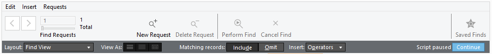
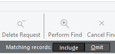
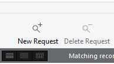

Omit Records
Exclude Items When Searching
You can omit records while performing a find. In other words, you can find information in your database that does not equal your specified criteria. For example, you can find all invoices except those created in the past 30 days.
How to find Records that Don’t Match Criteria
-
In Find mode, enter your criteria for the records to omit.
For example, to find all sales records except those for the city of London, type London in the City field. -
In the upper status toolbar, click the Omit button.


If the FileMaker Pro status toolbar is not visible, then click the Show or Hide Status Bar icon. -
Click the Perform Find button.
Tip: If you wish to do more than one Omit, you must remember to select Add New Request each time before selecting the next item.
How to Find Some Records While Omitting Others
-
In Find mode, type the criteria for the records to find.
For example, to find vendors in the state of New York, except those in the city of Albany, start by typing New York in the State field. -
Click New Request in the status toolbar.

-
Type criteria for the records to exclude, and click Omit.
E.g. to exclude Albany, you would type Albany in the City field and click Omit. -
Click the Perform Find button.
Notes on the Omit Feature
-
You can have omit criteria in more than one request.
-
FileMaker Pro works through the requests in the order you create them.
For example, in a Clients database with clients in the US and France: If the first request finds all clients in Paris and the second request omits all clients in the US, then the found set contains: all clients in Paris, France but none in Paris, Texas or anywhere else in the US. -
If the order of the requests is reversed (the first request omits all clients in the US and the second request finds all clients in Paris) then the found set includes: all clients in Paris, France and in Paris, Texas, but no records for clients elsewhere in the US.
© 2023 Adatasol, Inc.